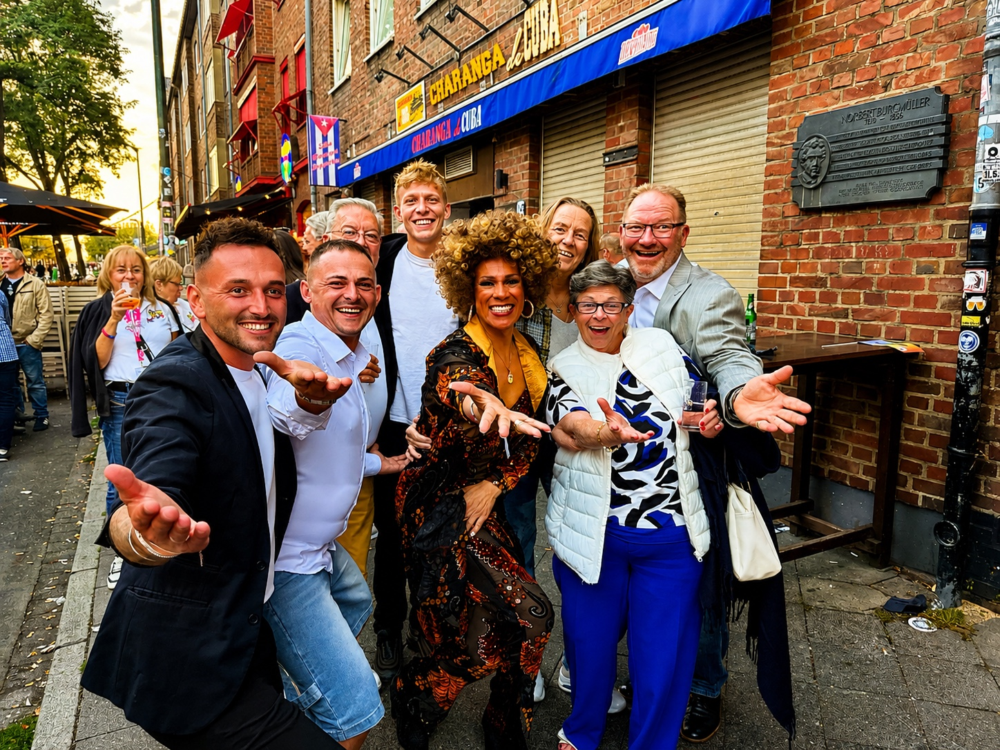
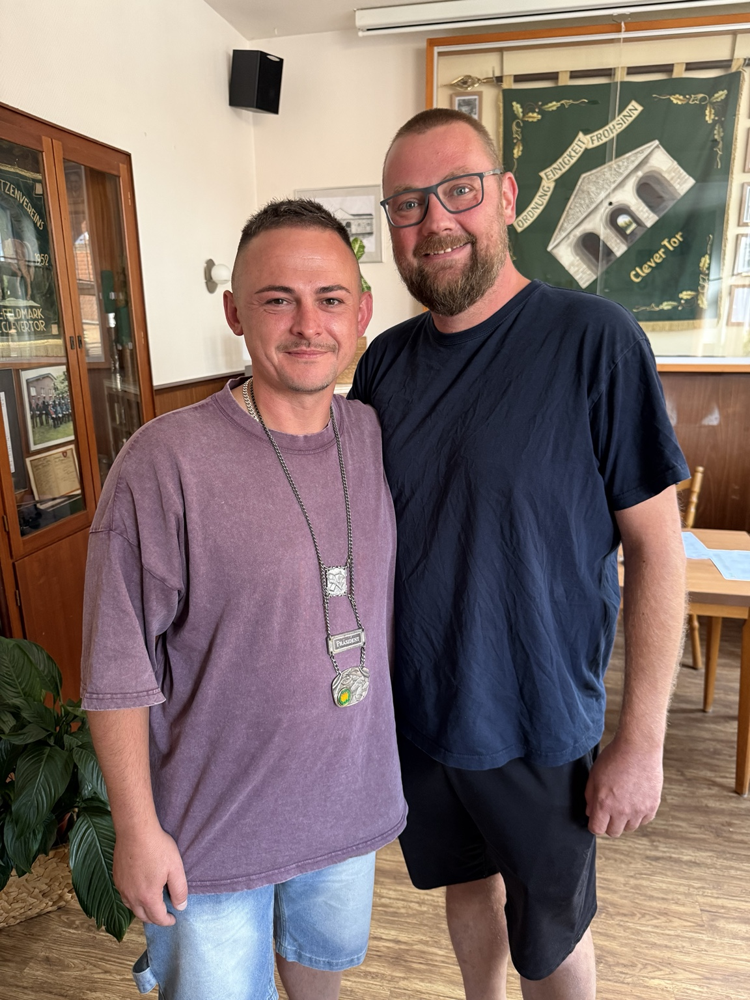
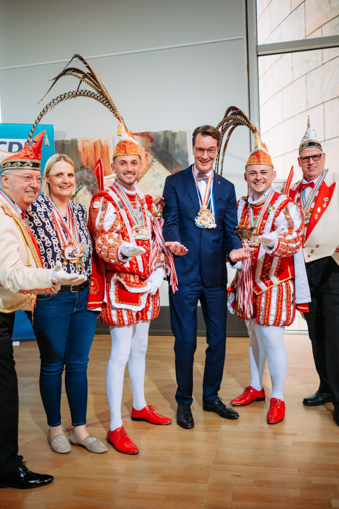
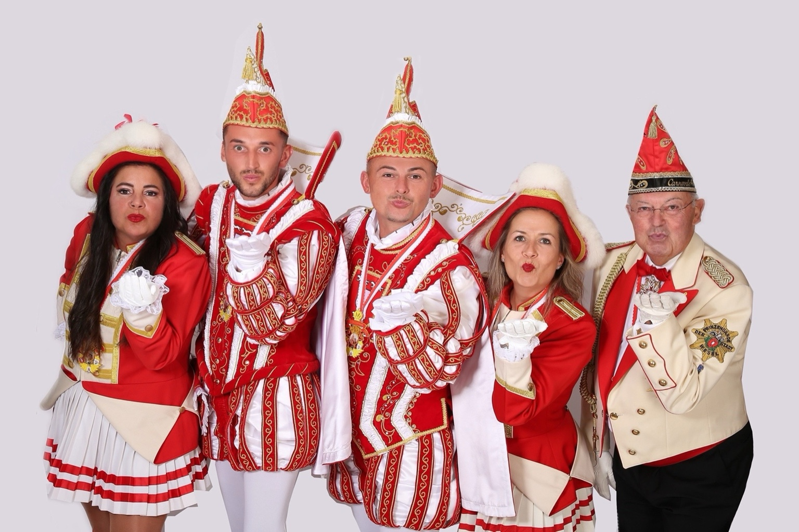

Sebastian Bassanese ist seit Juli 2026 Präsident des Feldmarker Karnevals-Komitees e.V. Zuvor engagierte er sich bereits als Schriftführer im Vorstand und ist seit vielen Jahren mit viel Herzblut im Feldmarker Karneval aktiv.
„Karneval lebt von den Menschen, die ihn gemeinsam gestalten.“
Mit Herz für den Feldmarker Karneval
Ein ganz besonderer Höhepunkt war die Session 2025/2026, in der Sebastian gemeinsam mit seinem Ehemann Tim als Prinz Sebastian I. die Stadt Wesel repräsentierte. Als Präsident möchte er Tradition bewahren und gleichzeitig neue Wege gehen. Gemeinschaft, ein lebendiges Vereinsleben, die Förderung des Nachwuchses und die Weiterentwicklung des FKK liegen ihm dabei besonders am Herzen.
Karnevalistische Momente

Gemeinsam unterwegsMit dem neu gewählten CAW-Vorstand in Düsseldorf.

Amtsübergabe beim FKKJens Tenbergen und Sebastian Bassanese.

Ein besonderer Moment der PrinzenzeitGemeinsam mit Charlotte Quick, Lars Gehrke, Ministerpräsident Hendrik Wüst, Prinz Tim I. und Prinzenführer Luc.

Prinzencrew der Session 2025/2026Silvana, Prinz Tim I., Prinz Sebastian I., Nicole und Prinzenführer Luc.